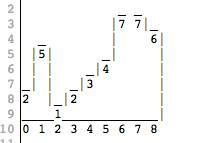
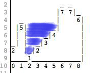

Challenge 4
El dilema de la lluvia
Gracias por ordenar nuestra habitación! Ya estas un paso mas cerca del iPad
El siguiente es un problema meteorológico. Te vamos a dar un conjunto de datos que van a representar paredes de diferentes alturas. Imaginate que ahora llueve, llueve mucho. Debido a las alturas de las paredes algunas secciones van a quedar inundadas y otras no. El objetivo de este ejercicio es que encuentres cuantos litros de agua queda dentro de las paredes.
Para poner un poco mas de claridad sobre este asunto, supongamos que tenemos el siguiente conjunto de datos: 2,5,1,2,3,4,7,7,6. Este conjunto de datos representaría un terreno de las siguientes características:
Si a este terreno le hacemos caer mucha agua, hay secciones que van a quedar inundadas, específicamente quedaría así:
Como se puede ver en la imagen, todo lo que esta a la izquiera y a la derecha del grafico se consideran como valores "0" y por lo tanto el agua "escurre" hacia esos lados, quedando solamente agua estancada en el pozo del medio.
Cada sección de 1x1 que quede "inundada" cuenta como 1 litro de agua acumulada, el objetivo de tu programa es que nos diga cuantos litros totales quedan acumulados según los datos que le damos.
Alguno de (pero no todos) los test que vamos a ejecutar son:
- Cuando le demos "1,1,2" al programa, esperamos recibir '0'.
- Cuando le demos "2,1,1" al programa, esperamos recibir '0'.
- Cuando le demos "2,5,1,2,3,4,7,7,6" al programa, esperamos recibir '10'.
Si crees que tenes el código que pueda pasar todos nuestros test, manda un POST a la siguiente url:
con los siguientes datos
- token: El token que te dimos cuando te registraste.
- type: El lenguaje en el cual escribiste la solución: ruby o javascript.
- code: El código que resuelve los tests.
Te dejamos un ejemplo en curl:
Si el código es correcto entonces vas a recibir un 200 y la url del siguiente ejercicio. Caso contrario recibirás un 422 y que fue lo que falló.